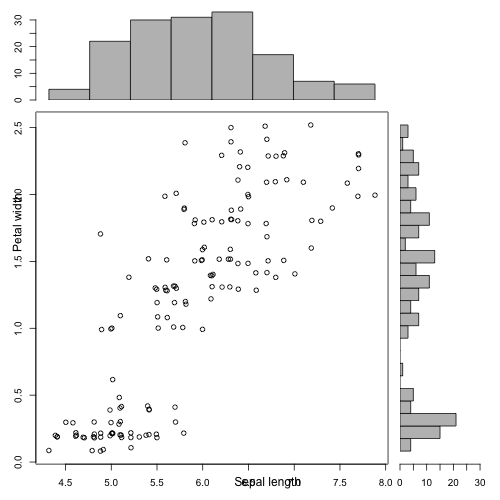

scatterwithmargins
Table of Contents
1 Using base graphics and par
This is a solution I found here:
http://www.r-bloggers.com/example-8-41-scatterplot-with-marginal-histograms/
However, it gives strange behaviour that I haven't figured out when I run it in the emacs IDE (the axis labels don't work). My understanding is that this is also true in Sweave. However, it works pretty well in R launched from the command line.
scatterhist = function(x, y, xlab="", ylab="", xbreaks="Sturges", ybreaks="Sturges"){ opar <- par() zones=matrix(c(2,0,1,3), ncol=2, byrow=TRUE) layout(zones, widths=c(4/5,1/5), heights=c(1/5,4/5)) xhist = hist(x, xbreaks, plot=FALSE ) yhist = hist(y, ybreaks, plot=FALSE) top = max(c(xhist$counts, yhist$counts)) par(mar=c(3,3,1,1)) plot(x,y) par(mar=c(0,3,1,1)) barplot(xhist$counts, axes=TRUE, ylim=c(0, top), space=0) par(mar=c(3,0,1,1)) barplot(yhist$counts, axes=TRUE, xlim=c(0, top), space=0, horiz=TRUE) par(oma=c(3,3,0,0)) mtext(xlab, side=1, line=1, outer=TRUE, adj=0, at=(1 * (mean(x) - min(x))/(max(x)-min(x)))) mtext(ylab, side=2, line=1, outer=TRUE, adj=0, at=(1 * (mean(y) - min(y))/(max(y) - min(y)))) par(opar) # restore original settings } with(iris, scatterhist(jitter(Sepal.Length), jitter(Petal.Width), xlab="Sepal length", ylab="Petal width") )
with(iris,
scatterhist(jitter(Sepal.Length),
jitter(Petal.Width),
xlab="Sepal length",
ylab="Petal width",
ybreaks = 30)
)

2 Using the library ade4
This is a package for ecological analysis. It's nice, but I can't figure out how to label the axes!
require(ade4)
s.hist(iris, xax=1, yax=4)
#Don't plot rownumbers s.hist(iris, xax=1, yax=4,clab=0)
#Adjust the density plots s.hist(iris, xax=1, yax=4, clab=0, adj=0.5)
3 Using ggplots
I have to say, I like my function the best! It labels the axes, works with Sweave, and you can break things into groups. The only disadvantage is this doesn't suppress the group legend when plotting a single color, which is a bit ugly.
require(ggplot2); require(grid); require(gridExtra) scatterWithMargins <- function(plotData, x, y, color = 1){ g_legend<-function(a.gplot){ tmp <- ggplot_gtable(ggplot_build(a.gplot)) leg <- which(sapply(tmp$grobs, function(x) x$name) == "guide-box") legend <- tmp$grobs[[leg]] return(legend) } xy <- ggplot(plotData, aes_string(x=x, y=y, col = color))+ geom_point()+ geom_density2d()+ theme_classic() xDen <- ggplot(plotData, aes_string(x=x, fill = color, col=color))+ geom_density(alpha=0.1)+ theme_classic()+ xlab("") yDen <- ggplot(plotData, aes_string(x=y, fill = color, col=color))+ geom_density(alpha=0.1)+ coord_flip()+ theme_classic()+ xlab("") leg <- g_legend( xDen) grid.arrange(xDen+theme(legend.position = "none"), leg, xy+theme(legend.position = "none"), yDen+theme(legend.position = "none"), nrow = 2, ncol = 2, widths = unit(c(2,1), c("null", "null")), heights = unit(c(1,2), c("null", "null")) ) } scatterWithMargins( iris, "Sepal.Length", "Petal.Width")
scatterWithMargins( iris, "Sepal.Length", "Petal.Width", "Species")

Date: 2013-08-27 09:35:54 EDT
HTML generated by org-mode 7.3 in emacs 23